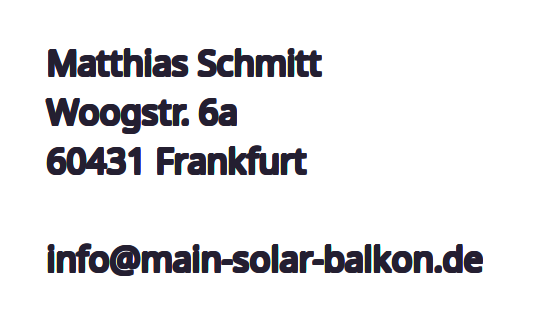

Datenschutz auf einen Blick
Allgemeine Hinweise
Die folgenden Hinweise geben einen einfachen Überblick darüber, was mit Ihren personenbezogenen Daten passiert, wenn Sie diese Website besuchen. Personenbezogene Daten sind alle Daten, mit denen Sie persönlich identifiziert werden können. Ausführliche Informationen zum Thema Datenschutz entnehmen Sie unserer unter diesem Text aufgeführten Datenschutzerklärung.
Datenerfassung auf dieser Website
Wer ist verantwortlich für die Datenerfassung auf dieser Website?
Die Datenverarbeitung auf dieser Website erfolgt durch den Websitebetreiber. Dessen Kontaktdaten können Sie dem Impressum dieser Website entnehmen.Wie erfassen wir Ihre Daten?
Ihre Daten werden zum einen dadurch erhoben, dass Sie uns diese mitteilen. Hierbei kann es sich z. B. um Daten handeln, die Sie in ein Kontaktformular eingeben. Andere Daten werden automatisch oder nach Ihrer Einwilligung beim Besuch der Website durch unsere IT- Systeme erfasst. Das sind vor allem technische Daten (z. B. Internetbrowser, Betriebssystem oder Uhrzeit des Seitenaufrufs). Die Erfassung dieser Daten erfolgt automatisch, sobald Sie diese Website betreten.Wofür nutzen wir Ihre Daten?
Ein Teil der Daten wird erhoben, um eine fehlerfreie Bereitstellung der Website zu gewährleisten. Andere Daten können zur Analyse Ihres Nutzerverhaltens verwendet werden.Welche Rechte haben Sie bezüglich Ihrer Daten?
Sie haben jederzeit das Recht, unentgeltlich Auskunft über Herkunft, Empfänger und Zweck Ihrer gespeicherten personenbezogenen Daten zu erhalten. Sie haben außerdem ein Recht, die Berichtigung oder Löschung dieser Daten zu verlangen. Wenn Sie eine Einwilligung zur Datenverarbeitung erteilt haben, können Sie diese Einwilligung jederzeit für die Zukunft widerrufen. Außerdem haben Sie das Recht, unter bestimmten Umständen die Einschränkung der Verarbeitung Ihrer personenbezogenen Daten zu verlangen. Des Weiteren steht Ihnen ein Beschwerderecht bei der zuständigen Aufsichtsbehörde zu. Hierzu sowie zu weiteren Fragen zum Thema Datenschutz können Sie sich jederzeit unter der im Impressum angegebenen Adresse an uns wenden. Analyse-Tools und Tools von Drittanbietern
Beim Besuch dieser Website kann Ihr Surf-Verhalten statistisch ausgewertet werden. Das geschieht vor allem mit Cookies und mit sogenannten Analyseprogrammen. Detaillierte Informationen zu diesen Analyseprogrammen finden Sie in der folgenden Datenschutzerklärung. Hosting und Content Delivery Networks (CDN) Externes Hosting
Diese Website wird bei einem externen Dienstleister gehostet (Hoster: github.io). Die personenbezogenen Daten, die auf dieser Website erfasst werden, werden auf den Servern des Hosters gespeichert. Hierbei kann es sich v. a. um IP-Adressen, Kontaktanfragen, Meta- und Kommunikationsdaten, Vertragsdaten, Kontaktdaten, Namen, Webseitenzugriffe und sonstige Daten, die über eine Website generiert werden, handeln. Der Einsatz des Hosters erfolgt zum Zwecke der Vertragserfüllung gegenüber unseren potenziellen und bestehenden Kunden (Art. 6 Abs. 1 lit. b DSGVO) und im Interesse einer sicheren, schnellen und effizienten Bereitstellung unseres Online-Angebots durch einen professionellen Anbieter (Art. 6 Abs. 1 lit. f DSGVO). Unser Hoster wird Ihre Daten nur insoweit verarbeiten, wie dies zur Erfüllung seiner Leistungspflichten erforderlich ist und unsere Weisungen in Bezug auf diese Daten befolgen.Allgemeine Hinweise und Pflichtinformationen
Datenschutz
Die Betreiber dieser Seiten nehmen den Schutz Ihrer persönlichen Daten sehr ernst. Wir behandeln Ihre personenbezogenen Daten vertraulich und entsprechend der gesetzlichen Datenschutzvorschriften sowie dieser Datenschutzerklärung. Wenn Sie diese Website benutzen, werden verschiedene personenbezogene Daten erhoben. Personenbezogene Daten sind Daten, mit denen Sie persönlich identifiziert werden können. Die vorliegende Datenschutzerklärung erläutert, welche Daten wir erheben und wofür wir sie nutzen. Sie erläutert auch, wie und zu welchem Zweck das geschieht. Wir weisen darauf hin, dass die Datenübertragung im Internet (z. B. bei der Kommunikation per E-Mail) Sicherheitslücken aufweisen kann. Ein lückenloser Schutz der Daten vor dem Zugriff durch Dritte ist nicht möglich. Hinweis zur verantwortlichen Stelle
Die verantwortliche Stelle für die Datenverarbeitung auf dieser Website ist:

Verantwortliche Stelle ist die natürliche oder juristische Person, die allein oder gemeinsam mit anderen über die Zwecke und Mittel der Verarbeitung von personenbezogenen Daten (z. B. Namen, E-Mail-Adressen o. Ä.) entscheidet.
Widerruf Ihrer Einwilligung zur Datenverarbeitung
Viele Datenverarbeitungsvorgänge sind nur mit Ihrer ausdrücklichen Einwilligung möglich. Sie können eine bereits erteilte Einwilligung jederzeit widerrufen. Dazu reicht eine formlose Mitteilung per E-Mail an uns. Die Rechtmäßigkeit der bis zum Widerruf erfolgten Datenverarbeitung bleibt vom Widerruf unberührt. Widerspruchsrecht gegen die Datenerhebung in besonderen Fällen sowie gegen Direktwerbung (Art. 21 DSGVO)
WENN DIE DATENVERARBEITUNG AUF GRUNDLAGE VON ART. 6 ABS. 1 LIT. E ODER F DSGVO ERFOLGT, HABEN SIE JEDERZEIT DAS RECHT, AUS GRÜNDEN, DIE SICH AUS IHRER BESONDEREN SITUATION ERGEBEN, GEGEN DIE VERARBEITUNG IHRER PERSONENBEZOGENEN DATEN WIDERSPRUCH EINZULEGEN; DIES GILT AUCH FÜR EIN AUF DIESE BESTIMMUNGEN GESTÜTZTES PROFILING. DIE JEWEILIGE RECHTSGRUNDLAGE, AUF DENEN EINE VERARBEITUNG BERUHT, ENTNEHMEN SIE DIESER DATENSCHUTZERKLÄRUNG. WENN SIE WIDERSPRUCH EINLEGEN, WERDEN WIR IHRE BETROFFENEN PERSONENBEZOGENEN DATEN NICHT MEHR VERARBEITEN, ES SEI DENN, WIR KÖNNEN ZWINGENDE SCHUTZWÜRDIGE GRÜNDE FÜR DIE VERARBEITUNG NACHWEISEN, DIE IHRE INTERESSEN, RECHTE UND FREIHEITEN ÜBERWIEGEN ODER DIE VERARBEITUNG DIENT DER GELTENDMACHUNG, AUSÜBUNG ODER VERTEIDIGUNG VON RECHTSANSPRÜCHEN (WIDERSPRUCH NACH ART. 21 ABS. 1 DSGVO). WERDEN IHRE PERSONENBEZOGENEN DATEN VERARBEITET, UM DIREKTWERBUNG ZU BETREIBEN, SO HABEN SIE DAS RECHT, JEDERZEIT WIDERSPRUCH GEGEN DIE VERARBEITUNG SIE BETREFFENDER PERSONENBEZOGENER DATEN ZUM ZWECKE DERARTIGER WERBUNG EINZULEGEN; DIES GILT AUCH FÜR DAS PROFILING, SOWEIT ES MIT SOLCHER DIREKTWERBUNG IN VERBINDUNG STEHT. WENN SIE WIDERSPRECHEN, WERDEN IHRE PERSONENBEZOGENEN DATEN ANSCHLIESSEND NICHT MEHR ZUM ZWECKE DER DIREKTWERBUNG VERWENDET (WIDERSPRUCH NACH ART. 21 ABS. 2 DSGVO).Beschwerderecht bei der zuständigen Aufsichtsbehörde
Im Falle von Verstößen gegen die DSGVO steht den Betroffenen ein Beschwerderecht bei einer Aufsichtsbehörde, insbesondere in dem Mitgliedstaat ihres gewöhnlichen Aufenthalts, ihres Arbeitsplatzes oder des Orts des mutmaßlichen Verstoßes zu. Das Beschwerderecht besteht unbeschadet anderweitiger verwaltungsrechtlicher oder gerichtlicher Rechtsbehelfe.Recht auf Datenübertragbarkeit
Sie haben das Recht, Daten, die wir auf Grundlage Ihrer Einwilligung oder in Erfüllung eines Vertrags automatisiert verarbeiten, an sich oder an einen Dritten in einem gängigen, maschinenlesbaren Format aushändigen zu lassen. Sofern Sie die direkte Übertragung der Daten an einen anderen Verantwortlichen verlangen, erfolgt dies nur, soweit es technisch machbar ist.SSL- bzw. TLS-Verschlüsselung
Diese Seite nutzt aus Sicherheitsgründen und zum Schutz der Übertragung vertraulicher Inhalte, wie zum Beispiel Bestellungen oder Anfragen, die Sie an uns als Seitenbetreiber senden, eine SSL- bzw. TLS- Verschlüsselung. Eine verschlüsselte Verbindung erkennen Sie daran, dass die Adresszeile des Browsers von „http://“ auf „https://“ wechselt und an dem Schloss-Symbol in Ihrer Browserzeile. Sie haben das Recht, die Einschränkung der Verarbeitung Ihrer personenbezogenen Daten zu verlangen. Hierzu können Sie sich jederzeit unter der im Impressum angegebenen Adresse an uns wenden. Das Recht auf Einschränkung der Verarbeitung besteht in folgenden Fällen:- Wenn Sie die Richtigkeit Ihrer bei uns gespeicherten personenbezogenen Daten bestreiten, benötigen wir in der Regel Zeit, um dies zu überprüfen. Für die Dauer der Prüfung haben Sie das Recht, die Einschränkung der Verarbeitung Ihrer personenbezogenen Daten zu verlangen.
- Wenn die Verarbeitung Ihrer personenbezogenen Daten unrechtmäßig geschah/geschieht, können Sie statt der Löschung die Einschränkung der Datenverarbeitung verlangen.
- Wenn wir Ihre personenbezogenen Daten nicht mehr benötigen, Sie sie jedoch zur Ausübung, Verteidigung oder Geltendmachung von Rechtsansprüchen benötigen, haben Sie das Recht, statt der Löschung die Einschränkung der Verarbeitung Ihrer personenbezogenen Daten zu verlangen.
- Wenn Sie einen Widerspruch nach Art. 21 Abs. 1 DSGVO eingelegt haben, muss eine Abwägung zwischen Ihren und unseren Interessen vorgenommen werden. Solange noch nicht feststeht, wessen Interessen überwiegen, haben Sie das Recht, die Einschränkung der Verarbeitung Ihrer personenbezogenen Daten zu verlangen.
Widerspruch gegen Werbe-E-Mails
Der Nutzung von im Rahmen der Impressumspflicht veröffentlichten Kontaktdaten zur Übersendung von nicht ausdrücklich angeforderter Werbung und Informationsmaterialien wird hiermit widersprochen. Die Betreiber der Seiten behalten sich ausdrücklich rechtliche Schritte im Falle der unverlangten Zusendung von Werbeinformationen, etwa durch Spam-E-Mails, vor.Datenerfassung auf dieser Website - Cookies
Unsere Internetseiten verwenden so genannte „Cookies“. Cookies sind kleine Textdateien und richten auf Ihrem Endgerät keinen Schaden an. Sie werden entweder vorübergehend für die Dauer einer Sitzung (Session-Cookies) oder dauerhaft (permanente Cookies) auf Ihrem Endgerät gespeichert. Session-Cookies werden nach Ende Ihres Besuchs automatisch gelöscht. Permanente Cookies bleiben auf Ihrem Endgerät gespeichert, bis Sie diese selbst löschen oder eine automatische Löschung durch Ihren Webbrowser erfolgt.
Teilweise können auch Cookies von Drittunternehmen auf Ihrem Endgerät gespeichert werden, wenn Sie unsere Seite betreten (Third-Party-Cookies). Diese ermöglichen uns oder Ihnen die Nutzung bestimmter Dienstleistungen des Drittunternehmens (z.B. Cookies zur Abwicklung von Zahlungsdienstleistungen).
Cookies haben verschiedene Funktionen. Zahlreiche Cookies sind technisch notwendig, da bestimmte Webseitenfunktionen ohne diese nicht funktionieren würden (z.B. die Warenkorbfunktion oder die Anzeige von Videos). Andere Cookies dienen dazu, das Nutzerverhalten auszuwerten oder Werbung anzuzeigen.
Cookies, die zur Durchführung des elektronischen Kommunikationsvorgangs (notwendige Cookies) oder zur Bereitstellung bestimmter, von Ihnen erwünschter Funktionen (funktionale Cookies, z. B. für die Warenkorbfunktion) oder zur Optimierung der Webseite (z.B. Cookies zur Messung des Webpublikums) erforderlich sind, werden auf Grundlage von Art. 6 Abs. 1 lit. f DSGVO gespeichert, sofern keine andere Rechtsgrundlage angegeben wird. Der Websitebetreiber hat ein berechtigtes Interesse an der Speicherung von Cookies zur technisch fehlerfreien und optimierten Bereitstellung seiner Dienste. Sofern eine Einwilligung zur Speicherung von Cookies abgefragt wurde, erfolgt die Speicherung der betreffenden Cookies ausschließlich auf Grundlage dieser Einwilligung (Art. 6 Abs. 1 lit. a DSGVO); die Einwilligung ist jederzeit widerrufbar. Sie können Ihren Browser so einstellen, dass Sie über das Setzen von Cookies informiert werden und Cookies nur im Einzelfall erlauben, die Annahme von Cookies für bestimmte Fälle oder generell ausschließen sowie das automatische Löschen der Cookies beim Schließen des Browsers aktivieren. Bei der Deaktivierung von Cookies kann die Funktionalität dieser Website eingeschränkt sein. Soweit Cookies von Drittunternehmen oder zu Analysezwecken eingesetzt werden, werden wir Sie hierüber im Rahmen dieser Datenschutzerklärung gesondert informieren und ggf. eine Einwilligung abfragen.
Kontaktformular
Wenn Sie uns per Kontaktformular Anfragen zukommen lassen, werden Ihre Angaben aus dem Anfrageformular inklusive der von Ihnen dort angegebenen Kontaktdaten zwecks Bearbeitung der Anfrage und für den Fall von Anschlussfragen bei uns gespeichert. Diese Daten geben wir nicht ohne Ihre Einwilligung weiter. Die Verarbeitung dieser Daten erfolgt auf Grundlage von Art. 6 Abs. 1 lit. b DSGVO, sofern Ihre Anfrage mit der Erfüllung eines Vertrags zusammenhängt oder zur Durchführung vorvertraglicher Maßnahmen erforderlich ist. In allen übrigen Fällen beruht die Verarbeitung auf unserem berechtigten Interesse an der effektiven Bearbeitung der an uns gerichteten Anfragen (Art. 6 Abs. 1 lit. f DSGVO) oder auf Ihrer Einwilligung (Art. 6 Abs. 1 lit. a DSGVO) sofern diese abgefragt wurde. Die von Ihnen im Kontaktformular eingegebenen Daten verbleiben bei uns, bis Sie uns zur Löschung auffordern, Ihre Einwilligung zur Speicherung widerrufen oder der Zweck für die Datenspeicherung entfällt (z. B. nach abgeschlossener Bearbeitung Ihrer Anfrage). Zwingende gesetzliche Bestimmungen – insbesondere Aufbewahrungsfristen – bleiben unberührt.Anfrage per E-Mail oder Telefon
Wenn Sie uns per E-Mail oder Telefon kontaktieren, wird Ihre Anfrage inklusive aller daraus hervorgehenden personenbezogenen Daten (Name, Anfrage) zum Zwecke der Bearbeitung Ihres Anliegens bei uns gespeichert und verarbeitet. Diese Daten geben wir nicht ohne Ihre Einwilligung weiter. Die Verarbeitung dieser Daten erfolgt auf Grundlage von Art. 6 Abs. 1 lit. b DSGVO, sofern Ihre Anfrage mit der Erfüllung eines Vertrags zusammenhängt oder zur Durchführung vorvertraglicher Maßnahmen erforderlich ist. In allen übrigen Fällen beruht die Verarbeitung auf unserem berechtigten Interesse an der effektiven Bearbeitung der an uns gerichteten Anfragen (Art. 6 Abs. 1 lit. f DSGVO) oder auf Ihrer Einwilligung (Art. 6 Abs. 1 lit. a DSGVO) sofern diese abgefragt wurde. Die von Ihnen an uns per Kontaktanfragen übersandten Daten verbleiben bei uns, bis Sie uns zur Löschung auffordern, Ihre Einwilligung zur Speicherung widerrufen oder der Zweck für die Datenspeicherung entfällt (z. B. nach abgeschlossener Bearbeitung Ihres Anliegens). Zwingende gesetzliche Bestimmungen – insbesondere gesetzliche Aufbewahrungsfristen – bleiben unberührt. Newsletter
Wenn Sie den auf der Website angebotenen Newsletter beziehen möchten, benötigen wir von Ihnen eine E- Mail-Adresse sowie Informationen, welche uns die Überprüfung gestatten, dass Sie der Inhaber der angegebenen E-Mail-Adresse sind und mit dem Empfang des Newsletters einverstanden sind. Weitere Daten werden nicht bzw. nur auf freiwilliger Basis erhoben. Diese Daten verwenden wir ausschließlich für den Versand der angeforderten Informationen und geben diese nicht an Dritte weiter.
Die Verarbeitung der in das Newsletteranmeldeformular eingegebenen Daten erfolgt ausschließlich auf Grundlage Ihrer Einwilligung (Art. 6 Abs. 1 lit. a DSGVO). Die erteilte Einwilligung zur Speicherung der Daten, der E-Mail-Adresse sowie deren Nutzung zum Versand des Newsletters können Sie jederzeit widerrufen, etwa über den „Austragen“-Link im Newsletter. Die Rechtmäßigkeit der bereits erfolgten Datenverarbeitungsvorgänge bleibt vom Widerruf unberührt.
Die von Ihnen zum Zwecke des Newsletter-Bezugs bei uns hinterlegten Daten werden von uns bis zu Ihrer Austragung aus dem Newsletter bei uns bzw. dem Newsletterdiensteanbieter gespeichert und nach der Abbestellung des Newsletters aus der Newsletterverteilerliste gelöscht. Daten, die zu anderen Zwecken bei uns gespeichert wurden bleiben hiervon unberührt.
Nach Ihrer Austragung aus der Newsletterverteilerliste wird Ihre E-Mail-Adresse bei uns bzw. dem Newsletterdiensteanbieter ggf. in einer Blacklist gespeichert, um künftige Mailings zu verhindern. Die Daten aus der Blacklist werden nur für diesen Zweck verwendet und nicht mit anderen Daten zusammengeführt. Dies dient sowohl Ihrem Interesse als auch unserem Interesse an der Einhaltung der gesetzlichen Vorgaben beim Versand von Newslettern (berechtigtes Interesse im Sinne des Art. 6 Abs. 1 lit. f DSGVO). Die Speicherung in der Blacklist ist zeitlich nicht befristet. Sie können der Speicherung widersprechen, sofern Ihre Interessen unser berechtigtes Interesse überwiegen.
Plugins und Tools
Google Web Fonts
Diese Seite nutzt zur einheitlichen Darstellung von Schriftarten so genannte Web Fonts, die von Google bereitgestellt werden. Beim Aufruf einer Seite lädt Ihr Browser die benötigten Web Fonts in ihren Browsercache, um Texte und Schriftarten korrekt anzuzeigen. Zu diesem Zweck muss der von Ihnen verwendete Browser Verbindung zu den Servern von Google aufnehmen. Hierdurch erlangt Google Kenntnis darüber, dass über Ihre IP-Adresse diese Website aufgerufen wurde. Die Nutzung von Google WebFonts erfolgt auf Grundlage von Art. 6 Abs. 1 lit. f DSGVO. Der Webseitenbetreiber hat ein berechtigtes Interesse an der einheitlichen Darstellung des Schriftbildes auf seiner Webseite. Sofern eine entsprechende Einwilligung abgefragt wurde (z. B. eine Einwilligung zur Speicherung von Cookies), erfolgt die Verarbeitung ausschließlich auf Grundlage von Art. 6 Abs. 1 lit. a DSGVO; die Einwilligung ist jederzeit widerrufbar. Wenn Ihr Browser Web Fonts nicht unterstützt, wird eine Standardschrift von Ihrem Computer genutzt. Weitere Informationen zu Google Web Fonts finden Sie unter https://developers.google.com/fonts/faq und in der Datenschutzerklärung von Google: https://policies.google.com/privacy?hl=de.Quelle: eRecht24
Angaben gemäß § 5 TMG
Sowie verantwortlich für den Inhalt nach § 55 Abs. 2 RStV:Haftungsausschluss
Haftung für Inhalte
Die Inhalte unserer Seiten wurden mit größter Sorgfalt erstellt. Für die Richtigkeit, Vollständigkeit und Aktualität der Inhalte können wir jedoch keine Gewähr übernehmen. Als Diensteanbieter sind wir gemäß § 7 Abs.1 TMG für eigene Inhalte auf diesen Seiten nach den allgemeinen Gesetzen verantwortlich. Nach §§ 8 bis 10 TMG sind wir als Diensteanbieter jedoch nicht verpflichtet, übermittelte oder gespeicherte fremde Informationen zu überwachen oder nach Umständen zu forschen, die auf eine rechtswidrige Tätigkeit hinweisen. Verpflichtungen zur Entfernung oder Sperrung der Nutzung von Informationen nach den allgemeinen Gesetzen bleiben hiervon unberührt. Eine diesbezügliche Haftung ist jedoch erst ab dem Zeitpunkt der Kenntnis einer konkreten Rechtsverletzung möglich. Bei Bekanntwerden von entsprechenden Rechtsverletzungen werden wir diese Inhalte umgehend entfernen.Haftung für Links
Unser Angebot enthält Links zu externen Webseiten Dritter, auf deren Inhalte wir keinen Einfluss haben. Deshalb können wir für diese fremden Inhalte auch keine Gewähr übernehmen. Für die Inhalte der verlinkten Seiten ist stets der jeweilige Anbieter oder Betreiber der Seiten verantwortlich. Die verlinkten Seiten wurden zum Zeitpunkt der Verlinkung auf mögliche Rechtsverstöße überprüft. Rechtswidrige Inhalte waren zum Zeitpunkt der Verlinkung nicht erkennbar. Eine permanente inhaltliche Kontrolle der verlinkten Seiten ist jedoch ohne konkrete Anhaltspunkte einer Rechtsverletzung nicht zumutbar. Bei Bekanntwerden von Rechtsverletzungen werden wir derartige Links umgehend entfernen.Urheberrecht
Die durch die Seitenbetreiber erstellten Inhalte und Werke auf diesen Seiten unterliegen dem deutschen Urheberrecht. Die Vervielfältigung, Bearbeitung, Verbreitung und jede Art der Verwertung außerhalb der Grenzen des Urheberrechtes bedürfen der schriftlichen Zustimmung des jeweiligen Autors bzw. Erstellers. Downloads und Kopien dieser Seite sind nur für den privaten, nicht kommerziellen Gebrauch gestattet. Soweit die Inhalte auf dieser Seite nicht vom Betreiber erstellt wurden, werden die Urheberrechte Dritter beachtet. Insbesondere werden Inhalte Dritter als solche gekennzeichnet. Sollten Sie trotzdem auf eine Urheberrechtsverletzung aufmerksam werden, bitten wir um einen entsprechenden Hinweis. Bei Bekanntwerden von Rechtsverletzungen werden wir derartige Inhalte umgehend entfernen.Datenschutz
Die Nutzung unserer Webseite ist in der Regel ohne Angabe personenbezogener Daten möglich. Soweit auf unseren Seiten personenbezogene Daten (beispielsweise Name, Anschrift oder eMail-Adressen) erhoben werden, erfolgt dies, soweit möglich, stets auf freiwilliger Basis. Diese Daten werden ohne Ihre ausdrückliche Zustimmung nicht an Dritte weitergegeben. Wir weisen darauf hin, dass die Datenübertragung im Internet (z.B. bei der Kommunikation per E-Mail) Sicherheitslücken aufweisen kann. Ein lückenloser Schutz der Daten vor dem Zugriff durch Dritte ist nicht möglich. Der Nutzung von im Rahmen der Impressumspflicht veröffentlichten Kontaktdaten durch Dritte zur Übersendung von nicht ausdrücklich angeforderter Werbung und Informationsmaterialien wird hiermit ausdrücklich widersprochen. Die Betreiber der Seiten behalten sich ausdrücklich rechtliche Schritte im Falle der unverlangten Zusendung von Werbeinformationen, etwa durch Spam-Mails, vor.Google Analytics
Diese Website benutzt Google Analytics, einen Webanalysedienst der Google Inc. (''Google''). Google Analytics verwendet sog. ''Cookies'', Textdateien, die auf Ihrem Computer gespeichert werden und die eine Analyse der Benutzung der Website durch Sie ermöglicht. Die durch den Cookie erzeugten Informationen über Ihre Benutzung dieser Website (einschließlich Ihrer IP-Adresse) wird an einen Server von Google in den USA übertragen und dort gespeichert. Google wird diese Informationen benutzen, um Ihre Nutzung der Website auszuwerten, um Reports über die Websiteaktivitäten für die Websitebetreiber zusammenzustellen und um weitere mit der Websitenutzung und der Internetnutzung verbundene Dienstleistungen zu erbringen. Auch wird Google diese Informationen gegebenenfalls an Dritte übertragen, sofern dies gesetzlich vorgeschrieben oder soweit Dritte diese Daten im Auftrag von Google verarbeiten. Google wird in keinem Fall Ihre IP-Adresse mit anderen Daten der Google in Verbindung bringen. Sie können die Installation der Cookies durch eine entsprechende Einstellung Ihrer Browser Software verhindern; wir weisen Sie jedoch darauf hin, dass Sie in diesem Fall gegebenenfalls nicht sämtliche Funktionen dieser Website voll umfänglich nutzen können. Durch die Nutzung dieser Website erklären Sie sich mit der Bearbeitung der über Sie erhobenen Daten durch Google in der zuvor beschriebenen Art und Weise und zu dem zuvor benannten Zweck einverstanden.Impressum vom Impressum Generator der Kanzlei Hasselbach, Rechtsanwälte für Arbeitsrecht und Familienrecht